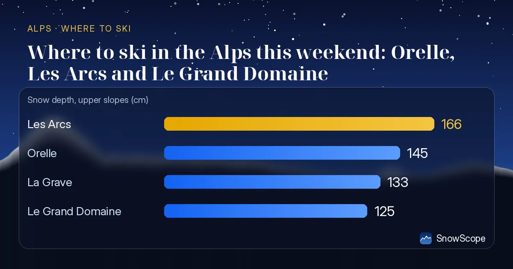

Where to ski in the Alps this weekend: Orelle, Les Arcs and Le Grand Domaine
This weekend brings both depth and fresh snow across the northern Alps. Les Arcs tops the group with 166 cm on the upper slopes, followed by Orelle at 145 cm and Le Grand Domaine at 125 cm. By Sunday evening, the forecast adds another 77 to 107 cm depending on where you go.
See the live snow forecast for Orelle in the SnowScope appSnow depth, powder alerts and the 3D map, free.
Which resort, which height
Les Arcs holds the most snow right now: 166 cm at the top (3,205 m), but only 4 cm at the base (1,222 m). The gap matters because early-season snow is thin at low elevations and thin patches hide rocks. Orelle shows 145 cm at the top (3,221 m) and 36 cm at the base (2,338 m). Le Grand Domaine, lower overall, has 125 cm at the top (2,516 m) and just 8 cm at the base (1,219 m).
Stick to the upper slopes and stay on groomed runs. The snow map shows where the best cover is; check the resort website to confirm which lifts are running.
| Resort | Snow depth | New snow, 72 h | Coming, next days | Top |
|---|---|---|---|---|
| Orelle | 145 cm | 143 cm | 92 cm | 3,221 m |
| Les Arcs | 166 cm | 134 cm | 77 cm | 3,205 m |
| Le Grand Domaine | 125 cm | 129 cm | 107 cm | 2,516 m |
| La Grave | 133 cm | 122 cm | 108 cm | 3,543 m |

Snow coming over the next three days
Saturday brings little: around 7 to 8 cm across all three. Sunday is the main event. Orelle picks up 65 cm, Les Arcs gets 52 cm, and Le Grand Domaine receives 71 cm. Monday adds another 20 to 29 cm.
Totals by Monday evening: Orelle gains 92 cm from now, Les Arcs 77 cm, Le Grand Domaine 107 cm. That fresh snow will be your best skiing—soft, forgiving, and kind to rocks hiding below the thin base layer.

Wet snow risk and when to ride
On Saturday, the freezing level climbs to 2,000–2,740 m at Les Arcs and 1,920–2,860 m at Le Grand Domaine. That means lower slopes may turn slushy by afternoon. At Orelle, the range is 2,360–2,600 m, so the base at 2,338 m sits right on the edge.
Sunday is colder: at Orelle, the freezing level drops to 2,100–2,780 m; at Les Arcs it falls to 1,350–1,760 m. This locks in winter snow across your upper runs. Ride early and stay high on Saturday; Sunday's conditions will be more stable all day.
Snow depth across past winters
At mid-mountain height (2,779 m), Orelle now sits deeper than it was in 17 of the past 46 Novembers on this date. Its mid-height depth today is about 61 cm; the typical mid-November value is 64 cm. So this season is roughly on par, not ahead.
Les Arcs at mid-mountain (2,213 m) holds 38 cm, deeper than it was in 28 of the past 46 Novembers—a strong start for early season. Le Grand Domaine at the same height (1,867 m) has 31 cm, deeper than 27 past Novembers. Both are running ahead of their normal early-November mark.
Choosing between the three
Les Arcs has the most depth right now and will hold snow better across all heights after Sunday's fresh snow arrives. Orelle is strong too and slightly higher overall. Le Grand Domaine will gain the most snow by weight but starts lower and may shed cover faster on south-facing slopes.
Pick Les Arcs or Orelle for the safest snow persistence. Both have good north-facing terrain and high elevations. Small crowds often find the same cover a few minutes away from the leader; the app shows the whole picture.
Before you go
Check each resort's website for lift openings and closures. Early-season operations vary week to week. Confirm the forecast one more time Friday evening; short-range predictions shift.
Before any off-piste skiing or touring, read the official avalanche bulletin for your area. North-facing slopes and shaded gullies hold snow longest and are often safer. Avoid south-facing runs in the warm part of the afternoon, especially on Saturday.
Tips for skiers
- Ride high: Les Arcs and Orelle both have terrain above 3,200 m where fresh snow will stay cold and playable through the weekend.
- Saturday afternoon: expect slush on runs below 2,400 m. Start early or stick to north-facing slopes and shade.
- Sunday morning onwards: freezing levels plunge, so the lower runs improve and become safer. Conditions stabilize.
- Rocks hide under thin base-layer snow at all three resorts. Stay on open pistes until Sunday's fresh snow arrives.
- Early-season snow depth drops steeply with elevation loss. At Les Arcs, the base holds almost no snow; don't plan to ski down from the top on Saturday.
About these numbers
Resort snow depths are the deepest snow on the resort's upper slopes on the date shown; they are estimates for an area, not a measurement at one point. Forecasts can change. Always read the official avalanche bulletin before going off-piste.
Official avalanche bulletins: EAWS (Alps)
Cite this report
For research, teaching or the press: the numbers and charts are free to reuse under CC BY 4.0 with this citation.
SnowScope (2026), Where to ski in the Alps this weekend: Orelle, Les Arcs and Le Grand Domaine, https://snowscope.app/blog/en/2026/11/alps-where-to-ski-this-weekend-20-november-2026.html, accessed 2026-11-20
SnowScope (Atlas Labs). (2026, November 20). Where to ski in the Alps this weekend: Orelle, Les Arcs and Le Grand Domaine. SnowScope snow reports. https://snowscope.app/blog/en/2026/11/alps-where-to-ski-this-weekend-20-november-2026.html
BibTeX
@misc{snowscope2026alpswheretoskithisweeken,
author = {{SnowScope (Atlas Labs)}},
title = {Where to ski in the Alps this weekend: Orelle, Les Arcs and Le Grand Domaine},
year = {2026},
month = nov,
howpublished = {\url{https://snowscope.app/blog/en/2026/11/alps-where-to-ski-this-weekend-20-november-2026.html}},
note = {Published 2026-11-21 10:57 UTC; accessed 2026-11-20}
}· CC BY 4.0 · Methods, data and tools →
Orelle: snow and temperature by height, this winter vs last (tools) →
Follow Orelle
Free: a message when fresh snow is coming, and the forecast every morning.
More snow reports

La Grave's top slopes near 3400 m will collect 49 cm in the week of 23–29 November 2026, with Wednesday 25 as the peak day. Data from 16 November.

5 resorts in the Alps, 46 past winters, one date: here is how today compares. Clearly above normal: 0. Confidence: good for the trend, lower for any …

96 cm of new snow forecast for Les Arcs over the next three days, with today bringing the heaviest falls.